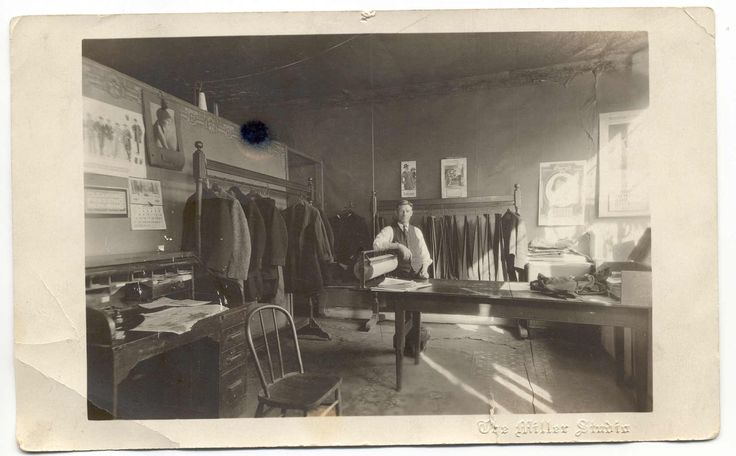

Section: Threads and Trends
In the ever-evolving world of fashion, blazers remain a timeless staple, continually reinvented to meet modern tastes. At Thread and Trends, we meticulously select blazers that reflect both enduring classics and the latest trends. Our focus on high-quality fabrics and precise tailoring ensures that each piece not only looks stylish but also offers unparalleled comfort and durability. As trends shift, we stay ahead by featuring cutting-edge designs and contemporary styles, ensuring that our customers always find something fresh and exciting. Explore our collection to find the perfect blazer that aligns with both current trends and timeless elegance.
The Timeless Appeal of Blazers
Blazers have long been a staple in the fashion world, effortlessly bridging the gap between casual and formal wear. At Thread and Trends, we recognize the versatility and timeless appeal of this wardrobe essential. Our collection celebrates the classic elegance of blazers, offering a range of styles to suit every occasion. From traditional cuts to modern
interpretations, our blazers are designed to enhance your style with impeccable tailoring and high-quality fabrics. Whether you're dressing for a business meeting or a casual outing, a blazer from Blazer Haven ensures you stand out with sophistication and flair.
